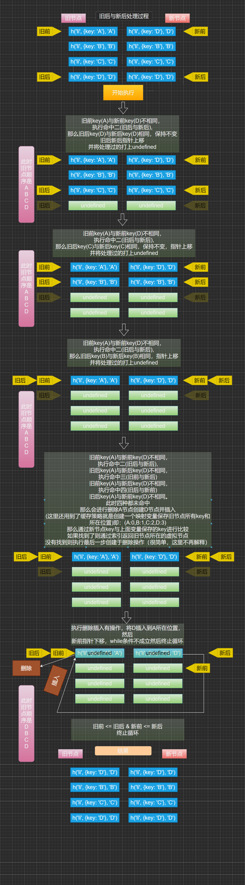

# diff 算法
-
diff 算法可以进行精细化对比，实现最小量更新
-
虚拟节点变成 DOM 节点在 diff 中可以做到
-
新虚拟 DOM 和旧虚拟 DOM 进行 diff (精细化比较)，算出应该如何最小量更新，最后反映到真正的 DOM 上
# snabbdom
snabbdom(瑞典语，“速度”) 是著名的虚拟 DOM 库，是 diff 算法的鼻祖- Vue 源码借鉴了
snabbdom - 源码使用 TypeScript 写的 https://github.com/snabbdom/snabbdom
- 从 npm 下载的是 build 出来的 JavaScript 版本
npm install -D snabbdom |
# 环境配置
安装snabbdom
npm install -S snabbdom |
- 安装并配置，安装不了或慢用
cnpm
npm i -D webpack@5 webpack-cli@3 webpack-dev-server@3 |
-
package.json
{ | |
"name": "snabbdom", | |
"version": "1.0.0", | |
"description": "", | |
"main": "vue.js", | |
"scripts": { | |
"dev": "webpack-dev-server" | |
}, | |
"author": "", | |
"license": "ISC", | |
"dependencies": { | |
"snabbdom": "^3.3.1" | |
}, | |
"devDependencies": { | |
"webpack": "^5.11.0", | |
"webpack-cli": "^3.3.12", | |
"webpack-dev-server": "^3.11.3" | |
} | |
} |
webpack.config.js
module.exports = { | |
//webpack5 不用配置 mode | |
// 入口 | |
entry: "./src/index.js", | |
// 出口 | |
output: { | |
// 虚拟打包路径，文件夹不会真正生成，而是在 8080 端口虚拟生成 | |
publicPath: "/dist/", | |
// 打包出来的文件名 | |
filename: 'bundle.js' | |
}, | |
// 配置 webpack-dev-server | |
devServer: { | |
// 静态根目录 | |
contentBase: 'dist', | |
// 端口号 | |
port: 8080, | |
}, | |
}; |
# Example
- 这是官方的例子， 我已经克隆过来了
- 注意在
index.html里面加一个id='container'的标签并引入dist/bundle.js
import { | |
init, | |
classModule, | |
propsModule, | |
styleModule, | |
eventListenersModule, | |
h, | |
} from "snabbdom"; | |
const patch = init([ | |
// Init patch function with chosen modules | |
classModule, // makes it easy to toggle classes | |
propsModule, // for setting properties on DOM elements | |
styleModule, // handles styling on elements with support for animations | |
eventListenersModule, // attaches event listeners | |
]); | |
const container = document.getElementById("container"); | |
const vnode = h("div#container.two.classes", { on: { click: ()=>{} } }, [ | |
h("span", { style: { fontWeight: "bold" } }, "This is bold"), | |
" and this is just normal text", | |
h("a", { props: { href: "/foo" } }, "I'll take you places!"), | |
]); | |
// Patch into empty DOM element – this modifies the DOM as a side effect | |
patch(container, vnode); | |
const newVnode = h( | |
"div#container.two.classes", | |
{ on: { click: ()=>{} } }, | |
[ | |
h( | |
"span", | |
{ style: { fontWeight: "normal", fontStyle: "italic" } }, | |
"This is now italic type" | |
), | |
" and this is still just normal text", | |
h("a", { props: { href: "/bar" } }, "I'll take you places!"), | |
] | |
); | |
// Second `patch` invocation | |
patch(vnode, newVnode); // Snabbdom efficiently updates the old view to the new state |
- 出现这句给代表成功了：
This is now italic type* and this is still just normal text[I'll take you places!](http://127.0.0.1:8080/bar)
# snabbdom h 函数使用
- h 函数用来产生
虚拟节点(vnode) - 比如这样调用 h 函数
// 1. 创建 patch 函数 | |
const patch = init([init, classModule, propsModule, styleModule, | |
eventListenersModule]) | |
// 2. 创建 h 虚拟节点 函数 写法 1 | |
const vnode = h('a', { | |
props: { | |
href: 'https:nekoaimer.com', | |
target: '_blank', | |
} | |
}, 'Hello World') | |
// 3. 让虚拟节点上树 | |
const container = document.querySelector('#container') | |
patch(container, vnode) | |
// 当然还有很多写法， 不过注意 h 函数在有两个参数时才可以直接写 h 函数或文本 | |
// 写法 2 | |
// const vnode = h('a', h('span', '233')) | |
// 写法 3 | |
// const vnode = h('a', [h('span', '111'), h('span', '222'), h('span', '333')]) | |
// 写法 4 | |
// const vnode = h('a', [h('span', '111'), h('span', [h('span', '222')])]) | |
/* 写法 5 | |
const vnode1 = h ('head', ' 我是 head') | |
const vnode2 = h ('div', ' 我是 div') | |
const vnode3 = h ('span', h ('a', ' 我是 span 中的 a')) | |
const vnode4 = h ('main', [vnode1,vnode2,vnode3]) | |
*/ |
- 只有真正了解实现原理，才能灵活应用它！所以我们接下来实现一个 h 函数！
# 实现 snabbdom 思路图流程
- 这里我分享下我实现
mini-snabbdom的思路流程图
# 实现 h 函数
- 这里我又写封装了两个功能函数
is函数objectFlat函数
- 另外引用的
vnode函数用于将参数以对象形式返回
import vnode from "./vnode.js" | |
import is from './utils/is.js' | |
import objectFlat from './utils/objectFlat.js' | |
export default function h(sel, data, c = []) { | |
let text | |
let children = [] | |
// 1. 判断只有一个参数时 data 返回空对象 c 返回空数组 | |
if (arguments.length == 1) { | |
data = {} | |
} | |
// 2. 参数只有两个时的情况 | |
else if (arguments.length == 2) { | |
// 2.1 如果第二个参数为 String 或 Number 类型 | |
if (is.String(data) || is.Number(data)) { | |
text = data | |
data = {} | |
} | |
// 2.2 如果参数为数组时 | |
else if (is.Array(data)) { | |
// 2.2.1 遍历数组中元素 | |
let cSel = sel | |
// 2.2.2 如果数组最后一项以 $ 开头则默认为子元素标签 | |
if (/^\$/.test(data[data.length - 1])) { | |
cSel = data[data.length - 1].substring(1) | |
data.pop() | |
} | |
for (let i = 0; i < data.length; i++) { | |
// 2.2.3 如果数组中元素为文本时 | |
if (is.String(data[i]) || is.Number(data[i])) { | |
children.push({ sel: cSel, data: {}, text: data[i], children: [], elm: undefined }) | |
} | |
// 2.2.4 如果参数为对象时 且 有 props 属性时 | |
if (is.Object(data[i]) && data[i].props) { | |
if (data[i].$isObjFlat) | |
data = objectFlat(data) | |
children = [] | |
} | |
// 2.2.5 没有 props 属性时 代表 data 中是子元素数组而不是 data 对象 | |
else | |
children.push(data[i]) | |
} | |
// 2.3 如果 children 有长度代表是子元素那么 data 中就应该是空对象 因为这是两个参数的判断 | |
if (children.length) | |
data = {} | |
} | |
} | |
// 3. 三个参数都有时的情况下 | |
else if (arguments.length == 3) { | |
// 3.1 且第二个参数为对象的情况 是否需要 flat 对象 添加属性 $isObjFlat: true | |
if (is.Object(data) && data.$isObjFlat) | |
data = objectFlat(data) | |
// 3.2 如果第三个参数为 String 或 Number 类型 | |
else if (is.String(c) || is.Number(c)) | |
text = c | |
// 3.3 如果第三个参数为数组 则代表里面应该都是 h 函数 进行遍历数组 | |
else if (is.Array(c)) { | |
// 3.3.1 如果数组最 h 后一项以 $ 开头则默认成为所有的子元素标签 否则依据父元素标签 但需满足 3.2.2 的情况 | |
let cSel = sel | |
if (/^\$/.test(c[c.length - 1])) { | |
cSel = c[c.length - 1].substring(1) | |
c.pop() | |
} | |
for (let i = 0; i < c.length; i++) { | |
// 3.3.2 继上面如果第三参数数组中元素为 String 或 Number 类型 | |
if (is.String(c[i]) || is.Number(c[i])) | |
children.push({ sel: cSel, data, children: [], text: c[i], elm: undefined }) | |
// 3.3.3 如果第三参数数组中也存在数组 | |
else if (is.Array(c[i])) | |
throw new Error(`数组中不可嵌套数组`) | |
// 3.3.4 如果第三参数数组中为对象类型 则必然应该是 h 函数 | |
else if (is.Object(c[i]) && c[i]?.sel) | |
children.push(c[i]) | |
else throw new Error('children参数里面只能全部为字符串数字或全部是h函数') | |
} | |
} | |
// 3.4 如果第三个参数为对象 则代表里面都是 h 函数 进行遍历数组 | |
else if (is.Object(c)) { | |
// 3.5 如果存在 sel 属性代表是 h 函数 追加到 children 中当子元素 | |
if (c?.sel) | |
children.push(c) | |
// 3.6 如果是普通对象则当成属性与 data 结合 data 中存在相同属性名会被后者覆盖 | |
else | |
data = objectFlat(c, data) | |
} | |
} | |
// 4. 返回 vnode | |
return vnode(sel, data, children, text, undefined) | |
} |
-
下面说明下我实现的
h函数它的功能 -
如果只传了一个参数时它的结构
{sel: 'div', data: {}, children: [], text: undefined, elm: undefined} |
- 如果传如了两个参数时它的结构
- 当第二个参数是普通文本，则会将文本类容放入
text中 - 当第二个参数是数组是
- 当第二个参数是普通文本，则会将文本类容放入
# vnode 函数
- 函数的功能主要是把传入的 5 个参数组合成对象返回
export default function vnode(sel, data, children, text, elm){ | |
const key = data?.key | |
return { | |
sel, | |
data, | |
children, | |
text, | |
elm, | |
key | |
} | |
} |
# is 函数
- 主要是用来判断类型的
export default { | |
Array: Array.isArray, | |
String: (s) => Object.prototype.toString.call(s) == '[object String]', | |
Number: (s) => Object.prototype.toString.call(s) == '[object Number]', | |
Function: (s) => Object.prototype.toString.call(s) == '[object Function]', | |
Object: (s) => Object.prototype.toString.call(s) == '[object Object]', | |
toString: (s) => Object.prototype.toString.call(s) | |
} |
# objectFlat 函数
- 这个函数作用于将多维对象转为一维对象
- 如果不是
attributiveJudgment中属性，其余名字的属性都会被降至一维保存到data.chaoticProps中
import is from './is.js' | |
// 类型判断 | |
function typeJudge(val, type) { | |
return is.toString(val) === `[object ${type}]` | |
} | |
// 判断指定属性名无需降维 | |
function attributiveJudgment(key) { | |
return ( | |
key == 'attributes' | |
|| key == 'props' | |
|| key == 'class' | |
|| key == 'dataset' | |
|| key == 'on' | |
|| key == 'style' | |
|| key == 'key' | |
) | |
} | |
// 将对象降至一维 | |
export default function objectFlat(oldObj, chaoticProps = {}, data = {}) { | |
JSON.stringify(chaoticProps) == '{}' ? data.chaoticProps : {} | |
// 如果为数组进行遍历递归 | |
if (typeJudge(oldObj, 'Array')) | |
oldObj.forEach(obj => objectFlat(obj, data.chaoticProps, data)) | |
// 如果为对象进行取值 | |
if (typeJudge(oldObj, 'Object')) { | |
// 遍历对象 | |
for (const key in oldObj) { | |
if (attributiveJudgment(key)) | |
data[key] = oldObj[key] | |
// 如果对象存在 key | |
else if (oldObj.hasOwnProperty(key)) { | |
// 取出 key 的值 | |
let val = oldObj[key] | |
// 如果 key 的值不为数组或对象直接往新对象添加数组与值 | |
if (!typeJudge(val, 'Array') && !typeJudge(val, 'Object')) | |
chaoticProps[key] = val | |
// 否则继续递归 | |
else | |
objectFlat(val, data.chaoticProps, data) | |
} | |
} | |
} | |
// 将降维的对象都放在 data.chaoticProps 中 | |
data.chaoticProps = chaoticProps | |
return data | |
} |
# createElement 函数
- 主要作用将 vnode 虚拟节点创建为 DOM 节点
并可以添加对应的属性、事件和样式等
import is from "./utils/is" | |
import objectFlat from "./utils/objectFlat" | |
export default function createElement(vnode) { | |
// 1. 根据 vnode.sel 创建对应的 DOM 标签节点 | |
const domNode = document.createElement(vnode.sel) | |
// 2. 获得 data 进行属性操作 | |
const data = objectFlat(vnode.data) | |
// 2.1 设置 dom 元素的属性，使用 setAttribute () | |
if (data.attributes) { | |
const attributes = data.attributes | |
for(const key in attributes) | |
domNode.setAttribute(key, attributes[key]) | |
} | |
// 2.2 和 attributes 模块类似，设置 dom 的属性，但是是以 element [attr] = value 的形式设置的 | |
if (data.props) { | |
const props = data.props | |
for (const key in props) { | |
domNode[key] = props[key] | |
console.log(domNode); | |
} | |
} | |
// 2.3 类样式 | |
if (data.class) { | |
const klass = data.class | |
let classMap = new Map() | |
for (const key in klass) | |
classMap.set(key, klass[key]) | |
classMap.forEach((key, val, map) => domNode.className += ' ' + val) | |
} | |
// 2.4 设置 data-* 的自定义属性 | |
if (data.dataset) { | |
const dataset = data.dataset | |
for (const key in dataset) | |
domNode.setAttribute(key, dataset[key]) | |
} | |
// 2.5 注册事件 | |
if (data.on) { | |
const ons = data.on | |
for (const key in ons) { | |
let skey | |
if (/^on|ON|oN|On/.test(key)) | |
skey = key.substring(2) | |
domNode.addEventListener(skey, ons[key]) | |
} | |
} | |
// 2.6 设置行内样式 | |
if (data.style) { | |
let styles = data.style | |
let styleMap = new Map() | |
for (const key in styles) | |
styleMap.set(styles[key], key) | |
styleMap.forEach((key, val, map) => domNode.style[key] = val) | |
} | |
// 3. 判断 children 必须为空数组时代表没有子节点 将内部文字赋给创建的 domNode 即可 | |
if (is.Array(vnode.children) && !vnode.children.length) { | |
// 使用 textContent 可以防止 XSS 攻击 下面用到 textContent 也是如此 | |
domNode.textContent = vnode.text | |
} | |
// 4. 如果 children 是个数组并不为空 代表里面有子节点 需要递归创建子节点 | |
if (is.Array(vnode.children) && vnode.children) { | |
// 4.1 优化：将数组长度提出再进行遍历 效率略高 同时 for 比 forOf 与 forIn 效率高 | |
const childrenLength = vnode.children.length | |
for (let i = 0; i < childrenLength; i++){ | |
// 4.2 递归创建 因为此函数返回的即是创建出来的节点 | |
let ch = createElement(vnode.children[i]) | |
// 4.3 这句可加可不加 因为上面递归判断空数组时也会创建文本 | |
// ch.textContent = vnode.children[i].text | |
// 4.3 将子节点追加进一开始的 vnode.sel 父节点中 | |
domNode.appendChild(ch) | |
} | |
} | |
// 5. 补充 elm 节点 代表该已节点上树 | |
vnode.elm = domNode | |
// 6. 返回 elm 对象 当作递归的返回值 | |
return vnode.elm | |
} |
# patch 函数
- 首先判断旧节点是否上树，如果是
DOM节点则转化为vnode对象 - 其次如果不是同一节点则进行暴力删除再插入新的节点
- 最好判断是同一节点进行精细化比较，由于代码量多放在
patchVnode函数中
import vnode from './vnode.js' | |
import createElement from './createElement' | |
import patchVnode from './patchVnode' | |
export default function patch(oldVnode, newVnode) { | |
// 1. 如果 oldVnode 没有 sel 属性代表还未上树 将其转化为虚拟节点 | |
if (!oldVnode.sel) { | |
// 获取 DOM 标签 | |
let sel = oldVnode.tagName.toLowerCase() | |
let attrs = oldVnode.attributes | |
// 与它的属性并存放在 data 中 | |
function getData(attrs, data = {}) { | |
for (let i = 0; i < attrs.length; i++) | |
data[attrs[i].name] = attrs[i].value | |
return data | |
} | |
oldVnode = vnode(sel, getData(attrs), [], undefined, oldVnode) | |
} | |
// 2. 判断 oldVnode 与 newVnode 是否是同一节点 先判断 key 效率略高 | |
if (oldVnode.key === newVnode.key && oldVnode.sel === newVnode.sel) { | |
patchVnode(oldVnode, newVnode) | |
} | |
// 3. 如果不是同一节点暴力插入 | |
else { | |
let dom = createElement(newVnode) | |
oldVnode.elm.parentNode.insertBefore(dom, oldVnode.elm) | |
oldVnode.elm.parentNode.removeChild(oldVnode.elm) | |
} | |
} |
# patchVnode
- 这个函数中都是同一节点不同条件所进行的精细化比较
- 如果是同一个对象 (代表地址一样) 则直接终止比较即可
- 如果新节点有文本且没有子元素时代表只需要将文本渲染到页面上即可，这里用到了
textContent是因为可以防止一些xss攻击，且性能上会高于innerHTML与innerText - 如果新节点有子节点但旧节点没有，则只需将旧节点文件情况将新节点中的所有子节点创建出来再渲染到页面上即可
- 如果旧节点与新节点都有子元素则进行更加精细的比较，也是 diff 算法的核心，就是经典的
旧前新前 旧后新后 旧前新后 旧后新前以及缓存策略
import createElement from "./createElement"; | |
import is from "./utils/is"; | |
import updateChildren from './updateChildren' | |
// 4. 判断新旧节点 children 都是数组且有子元素 | |
function isUpdate(oldVnode, newVnode) { | |
return ( | |
is.Array(oldVnode.children) && | |
is.Array(newVnode.children) && | |
oldVnode.children.length && | |
newVnode.children.length | |
) | |
} | |
export default function patchVnode(oldVnode, newVnode) { | |
// 1. 判断是否是同一个对象 | |
if (oldVnode == newVnode) return | |
// 2. 判断新节点是否有 text 属性 && children 为数组且是空数组 (代表没有子元素) | |
if (newVnode.text && is.Array(newVnode.children) && !newVnode.children.length) { | |
// 2.1 并且文本不相等时 将新节点的 text 文本重新渲染到老节点的 elm 上 (elm 就是标签) | |
if (newVnode.text != oldVnode.text) { | |
oldVnode.elm.textContent = newVnode.text | |
} | |
} | |
// 2. 判断新节点是否 children 为数组且有子元素 判断 children 是否为数组建议不省 | |
if (is.Array(newVnode.children) && newVnode.children.length) { | |
// 3. 如果旧节点 children 为空数组直接超度文本即可 | |
if (is.Array(oldVnode.children) && !oldVnode.children.length) { | |
// 3.1 首先将就节点文本超度 | |
oldVnode.elm.textContent = '' | |
// 3.2 保存新节点 childern 长度 效率略高 | |
const newChLength = newVnode.children.length | |
// 3.3 这里之所以要遍历创建是因为如果你直接 createElement (newVnode) 插入的话 会删除掉原先的父节点 再重新创建父节点 | |
// 3.4 相当于是暴力删除就节点再插入，而遍历的话是创建一个个标签由父级 appendChild 将子节点追加进去 | |
/* 3.5 你们可下去自行测试 就不需要 for 循环了，或者我把代码放下面 | |
const chDOM = createElement (newVnode) | |
oldVnode.elm.parentNode.appendChild (chDOM) | |
oldVnode.elm.parentNode.removeChild (oldVnode.elm) | |
*/ | |
for (let i = 0; i < newChLength; i++) { | |
// 3.6 这种循环追加才是最佳方式 | |
const chDOM = createElement(newVnode.children[i]) | |
oldVnode.elm.appendChild(chDOM) | |
} | |
} | |
// 4. 调用 isUpdate 方法进行判断 | |
else if (isUpdate(oldVnode, newVnode)) { | |
updateChildren(oldVnode.elm, oldVnode.children, newVnode.children) | |
} | |
} | |
} |
# updateChildren
- 这里就是本篇的核心所在，首先创建
旧前 新前 旧后 新后 旧前节点 旧后节点 新前节点 新后节点这几个核心变量 - 然后进行命中判断，并无论如何都是以
(①②③④)的顺序判断- 命中一：旧前新前
- 命中二：旧后新后
- 命中三：旧前新后
- 命中四：旧后新前
- 如果上面四种都没有命中则进行循环，但是
diff算法这里又用到了非常精妙的缓存策略 - 就是先将旧节点所有的
key与对应所在的索引位置保存起来，如果上面四种都未命中就会将缓存的旧节点key与新节点的 key 进行比较 - 如果匹配到该
key则获取它的索引，再通过索引获取oldCh(即旧节点)中配匹到的vnode，那么该虚拟节点则就是应该被插入的节点了 (当然要先判断通过索引是否获取到并存在的节点) - 接着因为该节点还是
vnode，所以需要通过createElement创建节点为元素，然后进行插入到旧前即可
import patchVnode from "./patchVnode" | |
import createElement from "./createElement" | |
function checkSameVnode(oldVnod, newVnode) { | |
return oldVnod.key === newVnode.key && oldVnod.sel === newVnode.sel | |
} | |
// 提升最大的寻找效率 进行缓存 key, 用于寻找 keyMap 映射对象，这样不用每次都遍历 oldCh 对象了 | |
function createKeyToOldIdx(oldCh, beginIdx, endIdx) { | |
const map = {} | |
// 当 beginIdx <= endIdx 代表中间 vnode 都未匹配到 会删除，在之前先保存映射 | |
for (let i = beginIdx; i <= endIdx; i++){ | |
const key = oldCh[i]?.key | |
if (key) | |
map[key] = i | |
} | |
return map | |
} | |
export default function updataChild(parentElm, oldCh, newCh) { | |
// 1. 定义四个指针 | |
// 旧前 | |
let oldStartIdx = 0 | |
// 新前 | |
let newStartIdx = 0 | |
// 旧后 | |
let oldEndIdx = oldCh.length - 1 | |
// 新后 | |
let newEndIdx = newCh.length - 1 | |
// 2. 指针指向的四个节点 | |
// 旧前节点 | |
let oldStartVnode = oldCh[0] | |
// 新前节点 | |
let newStartVnode = newCh[0] | |
// 旧后节点 | |
let oldEndVnode = oldCh[oldEndIdx] | |
// 新后节点 | |
let newEndVnode = newCh[newEndIdx] | |
// | |
let oldKeyToIdx | |
let idxInOld | |
// 需要移动的 vndoe | |
let elmToMove | |
// 2. 加上终止循环条件 | |
while (oldStartIdx <= oldEndIdx && newStartIdx <= newEndIdx) { | |
// 代表被标记为 undefined 进行略过 | |
if (oldStartVnode == null) | |
oldStartVnode = oldCh[++oldStartIdx] | |
else if (oldEndVnode == null) | |
oldEndVnode = oldCh[--oldEndIdx] | |
else if (newStartVnode == null) | |
newStartVnode = newCh[++newStartIdx] | |
else if (newEndVnode == null) | |
newEndVnode = newCh[--newEndIdx] | |
// 3. 命中① 旧前与新前 | |
else if (checkSameVnode(oldStartVnode, newStartVnode)) { | |
patchVnode(oldStartVnode, newStartVnode) | |
oldStartVnode = oldCh[++oldStartIdx] | |
newStartVnode = newCh[++newStartIdx] | |
console.log(`命中①旧前与新前`); | |
} | |
// 4. 命中② 旧后与新后 | |
else if (checkSameVnode(oldEndVnode, newEndVnode)) { | |
patchVnode(oldEndVnode, newEndVnode) | |
oldEndVnode = oldCh[--oldEndIdx] | |
newEndVnode = newCh[--newEndIdx] | |
console.log(`命中①旧后与新后`); | |
} | |
// 5. 命中③ 旧前与新后 | |
else if (checkSameVnode(oldStartVnode, newEndVnode)) { | |
patchVnode(oldStartVnode, newEndVnode) | |
// 0.oldEndVnode 是最后一个节点 所以将 oldStartVnode.elm 每次追加到它的后面，类似栈结构 举个栗子：比如 旧节点 ABCDE --> 新节点 EDCBA | |
// 1. 命中①未找到 命中②也未找到，E 执行命中③(找到了) 此时旧节点 ABCDE -> A 会到 E 的后面 -> BCDEA | |
// 2. 继续命中会按照 (①②③④) 顺序，后面不在解释，所以 D 又命中③ 此时旧节点是 BCDEA -> D 会移动到 E 后面 -> CDEBA | |
// 3.C 又会命中③ 此时旧节点是 CDEBA -> C 会移动到 E 后面 -> DECBA | |
// 4.B 又会命中③ 此时旧节点是 DECBA -> B 会移动到 E 后面 -> EDCBA | |
// 5. 最后 A 命中① 此时旧节点是 DECBA -> 保持不变 -> EDCBA | |
parentElm.insertBefore(oldStartVnode.elm, oldEndVnode.elm.nextSibling) | |
oldStartVnode = oldCh[++oldStartIdx] | |
newEndVnode = newCh[--newEndIdx] | |
console.log(oldStartVnode.elm,`命中③旧前与新后`) | |
} | |
// 6. 命中④ 旧后与新前 | |
else if (checkSameVnode(oldEndVnode, newStartVnode)) { | |
patchVnode(oldEndVnode, newStartVnode) | |
// 0.oldStartVnode 开始节点 所以将 oldEndVnode.elm 每次追加到它的前面，也类似栈结构 举个栗子：比如 旧节点 BCDXS --> 新节点 SDCBX | |
// 1.（①②③都未命中），此时执行命中④(找到了) S 此时旧节点 BCDXS -> S 会到 B 的前面 -> SBCDX | |
// 2. 继续命中会按照 (①②③④) 顺序，后面不在解释。执行 X 命中② 此时旧节点是 SBCDX -> X 会保持不变 -> SBCDX | |
// 3. 继续执行 (注意旧节点与新节点 SX 已处理) B 执行命中③ 此时旧节点是 SBCDX -> B 移动到 B 的前面 (相当于保持不变) -> SBCDX | |
// 4. 继续执行 C 命中③ 此时旧节点 SBCDX -> 将 C 移动到 B 前面 -> SDCBX | |
// 5. 最后都剩下 D 命中① 旧节点 SDCBX -> D 保持不变 -> SDCBX | |
// 最后注意测试的时候指针都要变化，并且处理过的节点打上 undefined，就会略过，最好通过画图方式测试 | |
parentElm.insertBefore(oldEndVnode.elm, oldStartVnode.elm) | |
oldEndVnode = oldCh[--oldEndIdx] | |
newStartVnode = newCh[++newStartIdx] | |
console.log(`命中④旧后与新前`) | |
} | |
// 7. 上面四种都未命中时 | |
else { | |
//console.log (' 上面四种都未命中 ') | |
// 缓存 oldCh 里面的所有 key 与对应的位置 方便查找不用再循环查找 | |
oldKeyToIdx = createKeyToOldIdx(oldCh, oldStartIdx, oldEndIdx) | |
// 匹配新属性是否有该 key 返回它的位置索引 | |
idxInOld = oldKeyToIdx[newStartVnode.key] | |
// 根据位置索引取出对应的 old 的节点 作为移动的节点 | |
elmToMove = oldCh[idxInOld] | |
// 如果 idxInOld 为 undefined 或 null 代表是新的节点 需要创建并插入 | |
if (!idxInOld) | |
parentElm.insertBefore(createElement(newStartVnode), oldStartVnode.elm) | |
// 10. 否则不是新的 vnode 则需要进行移动节点 | |
else { | |
// 说明不是全新的项，要移动 | |
// 进行 patchVnode 对比 | |
patchVnode(elmToMove, newStartVnode) | |
// 把 vnode 设置为 undefined，代表已经处理完此 vnode | |
oldCh[idxInOld] = undefined | |
// 移动，调用 insertBefore 也可以实现移动。 | |
parentElm.insertBefore(elmToMove.elm, oldStartVnode.elm); | |
} | |
//newStartVndoe 也需要不断获取新节点 | |
newStartVnode = newCh[++newStartIdx]; | |
} | |
} | |
// 8. 说明 newCh，newStartIdx 与 newEndIdx 中间还有剩余节点没有处理，需要进行要追加这些节点 | |
if (newStartIdx <= newEndIdx) { | |
// 判断 before 是否有值，没有则返回 null 返回 null 的话 insertBefore 会默认插入到最后一行 | |
const before = newCh[newEndIdx + 1] ? newCh[newEndIdx + 1].elm : null | |
// 进行遍历插入 但插入的是虚拟节点 所以需要用 createElement 函数创建出元素再进行插入 | |
for (let i = newStartIdx; i <= newEndIdx; i++) | |
parentElm.insertBefore(createElement(newCh[i]), before) | |
} | |
// 9. 说明 oldCh，oldStartIdx 与 oldEndIdx 中间还有剩余节点没有处理，需要进行删除这些节点 | |
else if (oldStartIdx <= oldEndIdx) { | |
for (let i = oldStartIdx; i <= oldEndIdx; i++) | |
// 删除节点用父元素移除即可 | |
if(oldCh[i]) | |
parentElm.removeChild(oldCh[i].elm) | |
} | |
} |
- 下面我还对
旧前新前、旧后新后、旧前新后、旧后新前四种顺序做了画图演示
# 旧前新前执行顺序
- 简单介绍下旧前新前执行顺序，想要了解 diff 算法一定要谨记四大命中的执行顺序
# 旧后新后执行顺序
- 旧后与新后执行顺序，涉及到了四种都未命中的处理流程即对应的缓存策略，问题不大～

- 这里结合代码并且自己画图分析会更好理解～
# 旧前新后执行顺序
- 这里是旧前与新后的执行顺序
# 旧后新前执行顺序
- 这里是旧后与新前的执行顺序